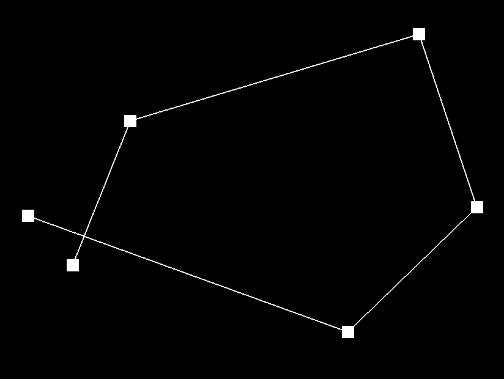
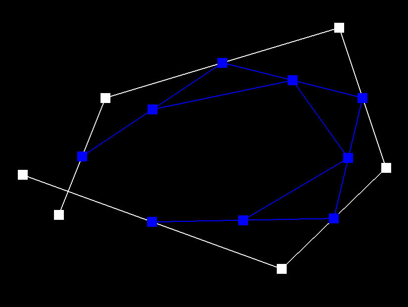
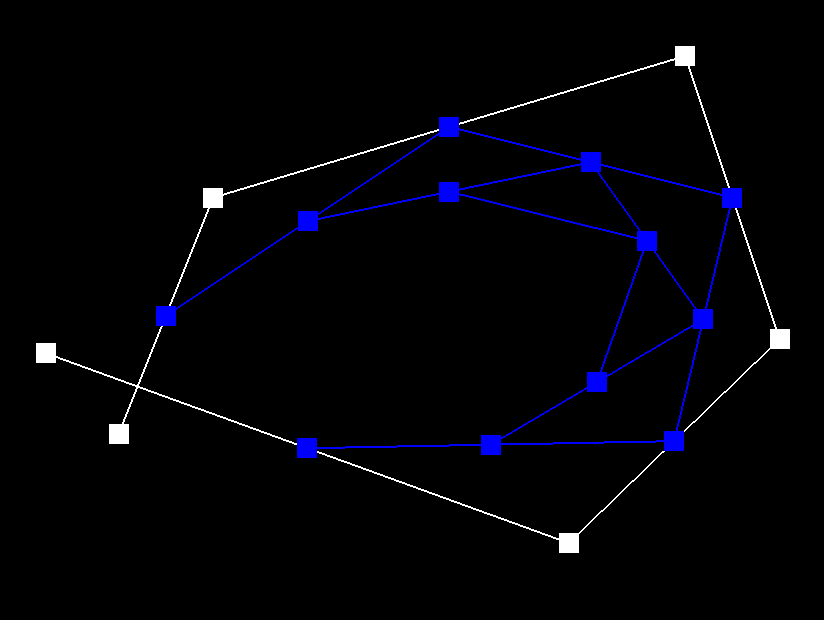
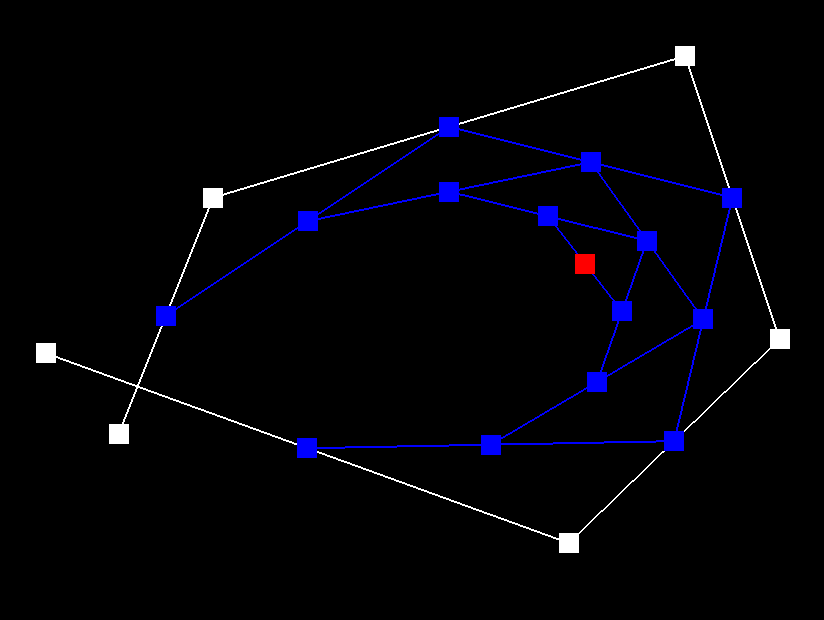
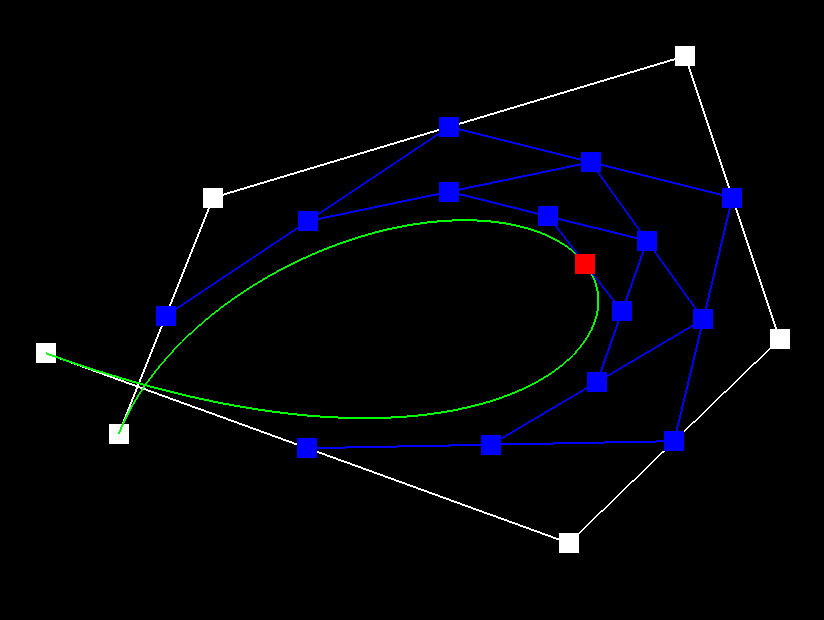
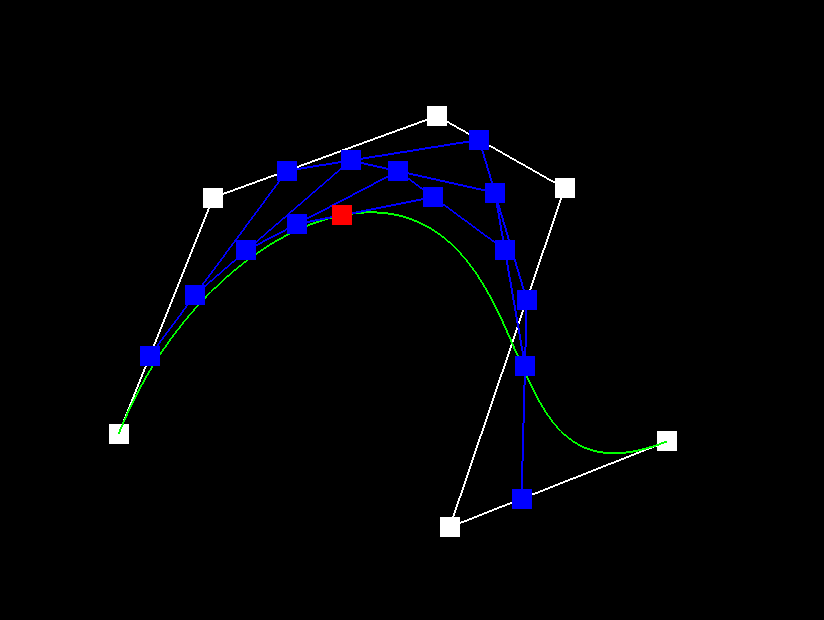
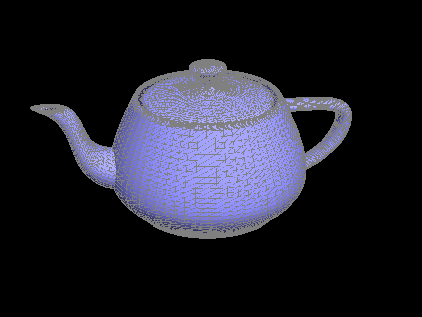
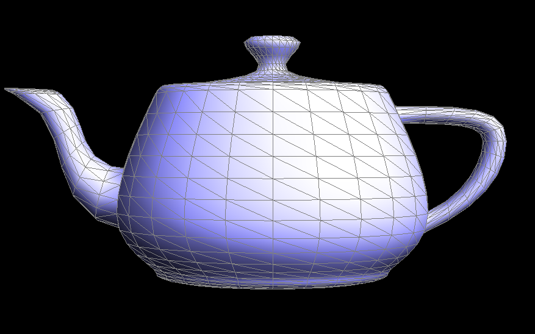

CS184/284A Spring 2025 Homework 2 Write-Up
Names:
Link to webpage: (TODO) cs184.eecs.berkeley.edu/sp25
Link to GitHub repository: (TODO) cs184.eecs.berkeley.edu/sp25
Overview
Give a high-level overview of what you implemented in this homework. Think about what you've built as a whole. Share your thoughts on what interesting things you've learned from completing the homework.Section I: Bezier Curves and Surfaces
Part 1: Bezier curves with 1D de Casteljau subdivision
De Casteljau's algorithm is a recursive algorithm that allows us to define a smooth curve from a series of points. Given a value \(t \in [0, 1]\) and the points \(p_1, p_2, \ldots p_n \), we can draw a line between each pair of points and select new points at proportion \( t \) along each line. Each iteration of the recursion reduces the number of points by 1, and we can keep doing this until we have a single point left. If we do this for all values \(t \in [0, 1]\), we will eventually draw out a smooth curve.To implement this algorithm, I looped through pairs of points,
(cur, next). To get the point in between them, I first
calculate the vector dir = next - cur, and then calculate the
point point = cur + dir * t.
|

|

|
|

|

|

|

|
|

|

|
Part 2: Bezier surfaces with separable 1D de Casteljau
To draw a Bezier surface, we can use the same de Casteljau's algorithm as before, but with two parameters \(u\) and \(v\). Since we are in a 3D space, we think of the points as being arranged in a grid. We first recursively apply de Casteljau's algorithm to each row of the grid with parameter \(u\), transforming the grid into a single row of points. Afterwards, we can apply de Casteljau's algorithm again to this new row of points with parameter \(v\) to get a single point on the surface. If we continue to do this for all values of \(u\) and \(v\), we will eventually draw out a smooth surface.To implement this algorithm, I first filled out
evaluateStep for 3D points, which is the same as the
previous part.
Afterwards, I implemented evalute1D, which repeatedly applies evaluateStep on a list of
points until we are left with a single point.
Finally, I implemented evaluate, which takes in \(u\) and \(v\) as parameters. It first applies
evaluate1D with parameter \(u\) to each row separately, giving us a single list of points.
Afterwards, it calls evaluate1D again with parameter \(v\) on this new list of points to get a single
point on the surface.
|

|
Section II: Triangle Meshes and Half-Edge Data Structure
Part 3: Area-weighted vertex normals
To implement the area-weighted vertex normals, I looped through each of the neighboring faces to the vertex and summed up the normals for each. To loop through the faces, I use ado-while that loops through the half edges using the half_edge->twin()->next() style in the examples.
Given a half-edge, I can also get the normal associated with the face using h->face()->normal().
|

|